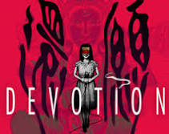
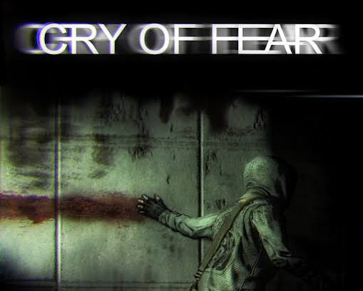

Up to four players enter haunted houses, schools, and prisons using real-world paranormal gear like EMF readers and spirit boxes to identify ghost types.Ghosts actively listen to your microphone, reacting when you speak their name and hunting players down when sanity levels drop too low.
Switch between an FBI agent investigating ritualistic murders in the Pacific Northwest and a writer trapped inside a shifting shadow version of New York City.You must burn away layers of impenetrable darkness with your flashlight before bullets can even harm the twisted entities stalking you.
While performing real embalming procedures during a late-night shift, a demon possesses one of the corpses and torments you with hallucinations.You must gather occult clues across the morgue to identify and burn the right possessed body before the entity claims your soul.